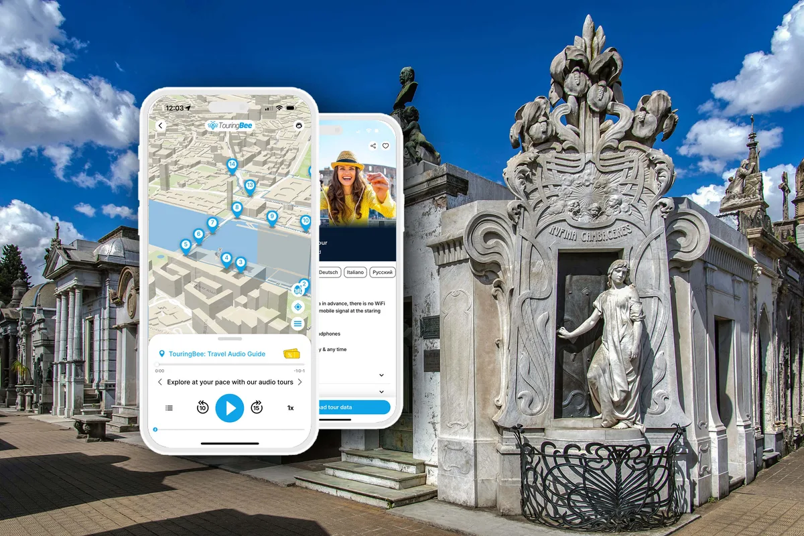

Puedes entrar al Cementerio de la Recoleta sin nada más que la entrada, y miles lo hacen. La mayoría encuentra a Eva Perón, fotografía un par de ángeles, se pierde un rato y se va a los cuarenta minutos, después de haber estado a cincuenta metros de las historias más extrañas de la Argentina sin escuchar ni una. El cementerio no se explica solo. Así que la verdadera pregunta no es si conviene alguna guía, sino cuál.
Hay tres opciones honestas: una visita guiada en vivo (gratis en español, paga en inglés), una audioguía autoguiada como la de TouringBee, o tus propios pies y un mapa. Esta es una comparación justa de las tres — nosotros vendemos una, y aun así te vamos a decir cuándo las otras son la mejor opción.
¿Todavía estás armando el viaje entero? Empieza por nuestra guía completa del Cementerio de la Recoleta y después vuelve aquí para elegir el formato.
Las tres opciones en un vistazo
| Visita guiada | Audioguía | Por tu cuenta | |
|---|---|---|---|
| Costo | Gratis (español) · US$15–35 grupo chico en inglés · US$60+ privado | €9.99 pago único (por celular, no por persona) | Solo la entrada |
| Idioma | Gratuitas: solo español. Pagas: inglés, algunas en portugués | Español o inglés | El que leas tú |
| Tiempo | 1,5–2 h con salida y ritmo fijos | De 45 min a 3 h, en cualquier momento entre las 9:00 y las 17:00 | Sin límite — en general, 40 min |
| Orientación | Sigue el paraguas | Mapa offline con las 22 paradas | Mapa de papel de la entrada, si hay |
| Historias | 15–25 tumbas, según el guía | 22 paradas por un historiador profesional, se pueden repetir | Placas y carteles (mínimos) |
| Preguntas | Sí — la gran ventaja | No | No |
| Multitudes | La multitud eres tú | Ve a las 9:00 y ten los pasillos para ti | Igual |
| Ideal para | Gente que aprende de una persona; primerizos que disfrutan el grupo | Viajeros independientes, fotógrafos, familias, cualquiera que odie los paraguas | Quien repite la visita; una mirada rápida |
Opción 1: una visita guiada
Las visitas gratuitas de la Ciudad (en español)
Cada hora, un guía de la Ciudad encabeza una visita gratuita desde la entrada principal — días hábiles de 10:00 a 16:00, fines de semana y feriados desde las 9:00. Conocen el cementerio al dedillo y te dan lo que una primera visita más necesita: una cronología, un recorrido por el laberinto y nombres para las caras. Si hablas español, es un lujo que no cuesta nada. Se suspende por entierros y clima, y no hay salida en inglés, diga lo que diga el chico del hostel.
Tours pagos en inglés
Las caminatas en grupo chico en inglés salen varias veces al día y la mayoría incluye la entrada para no residentes, lo que le quita un poco de filo al precio. Un buen guía es un placer: te lee las puertas, responde preguntas y sabe en qué bóvedas se ve una escalera caracol a través del vidrio. Las contras son las de cualquier tour en grupo — salida fija, ritmo fijo, noventa minutos apiñados entre quince, y el pasillo de Evita visto desde el grupo a la peor hora del día. Compara visitas guiadas en GetYourGuide →
Elige esta opción si aprendes mejor con una persona, quieres preguntar cosas o te parece bien cambiar libertad por estructura. Reserva la primera salida de la mañana.
Opción 2: una audioguía autoguiada
Una audioguía es un tour sin el grupo. La descargas antes, entras cuando quieres y cada historia la inicias tú mismo cuando llegas a la tumba. El tour de TouringBee por Recoleta tiene 22 paradas en un mapa offline — del pórtico al Nostradamus argentino —, cada una una grabación de tres a cinco minutos escrita por un historiador profesional. Aquí el mapa importa más que en casi cualquier otro lugar: la señal del celular se muere entre las paredes de mármol, y un recorrido que funcione offline es la diferencia entre encontrar la tumba del cuidador y rendirse.
Lo que pierdes es al ser humano: nadie a quien preguntar, ninguna respuesta al “¿y eso qué es?” sobre la bóveda que no está en el recorrido. Lo que ganas es Recoleta a las 9:00 sin nadie en el pasillo de Evita, la libertad de pasar veinte minutos frente a la puerta de Rufina y saltarte al vicepresidente, e historias que puedes volver a escuchar. Está narrada en español y en inglés, un solo pago cubre un año, y todo junto cuesta menos que la entrada. No incluye la entrada — solo el sitio oficial la vende.
Elige esta opción si viajas por tu cuenta, vas a sacar fotos, vas con chicos, tienes poco tiempo o simplemente quieres escuchar las historias sin pararte bajo el paraguas de nadie.

Audioguía del Cementerio de la RecoletaAcceso inmediato
- 100% offline — adentro del cementerio no necesitas Wi-Fi ni datos
- Mapa offline con el recorrido — cada historia la inicias tú, de pie frente a la bóveda
- Narración en español y en inglés
- Funciona en iOS y Android
- 22 paradas, entre 1 y 2 horas a tu ritmo
Opción 3: por tu cuenta
Gratis, sin límite, y la elección de la mayoría — que es justamente por lo que la mayoría ve tan poco. Recoleta premia el conocimiento: una tumba es una linda pieza de piedra hasta que sabes que la chica esculpida en la puerta, dicen, despertó dentro del cajón; a partir de ahí es inolvidable. La señalización adentro es escasa. Los días buenos hay un mapa de papel en la entrada. Dar vueltas tiene placeres reales: vas a encontrar bóvedas abandonadas con escaleras caracol que bajan a la oscuridad, un gato sobre una cúpula, un techo de vitrales que nadie fotografía. Solo sé honesto con lo que te vas a llevar: atmósfera, sí; las historias, no.
Elige esta opción si es tu segunda visita, ya leíste de antemano (nuestra guía del recorrido es gratis), o solo tienes media hora y quieres a Evita y la luz.
La mejor respuesta: combinarlas
Si tienes tiempo, haz dos vueltas. Primero una visita guiada — la gratuita en español si puedes, una paga en inglés si no — por la cronología y para aprenderte la cuadrícula. Después vuelve a dar la vuelta con la audioguía, en orden inverso si quieres, y detente donde el grupo no te dejó. La segunda vuelta es donde el cementerio se te mete de verdad bajo la piel. Y si solo tienes una vuelta, que sea con la audioguía a las 9:00.
Escucha las historias frente a las bóvedas
22 paradas, mapa offline, narración en español o en inglés — desde €9.99, un solo pago, sin suscripción.
Consigue la audioguíaCuánto cuesta, con honestidad
Para dos personas en un tour pago en inglés: US$30–70 con entradas incluidas, 90 minutos, una mañana. Para dos personas con audioguía: las dos entradas (unos 24.000 ARS cada una para no residentes) más una compra de €9.99 compartida en un celular con un adaptador de auriculares, o dos celulares con dos compras — y todo el tiempo que quieras. Para dos personas por su cuenta: dos entradas y cuarenta minutos. El tour y la audioguía salen más o menos parejos si el tour incluye las entradas; la audioguía gana en flexibilidad y tiempo, el tour en preguntas.
Errores frecuentes
Esperar en la puerta una visita gratuita en inglés que no existe. Reservar un tour en grupo a las 13:00 en enero y pasarlo en la fila de la bóveda de Evita con el calor. Descargar la audioguía adentro del cementerio con una señal que no está. Hacer el tour, saltarse la segunda vuelta y darse cuenta en el avión de que nunca viste al boxeador. Y el clásico: entrar sin preparación, ver a Evita y salir.
En resumen
Elige un guía si quieres una persona. Elige la audioguía si quieres el cementerio. Elige las dos si puedes. Sea lo que sea, llega a la entrada a las 9:00 — el formato importa menos que la hora.
La audioguía está lista cuando tú lo estés: 22 paradas, mapa offline, español o inglés, un solo pago. Consigue la audioguía — €9.99
Preguntas frecuentes
¿Necesitas un guía para el Cementerio de la Recoleta?
Para entrar, no — está totalmente abierto a los visitantes independientes. Pero sin algún tipo de guía la mayoría ve a Evita y poco más. Un mapa más historias (un guía en vivo o una audioguía) es lo que convierte el laberinto en una visita.
¿Hay visitas gratuitas al Cementerio de la Recoleta en inglés?
No. Las visitas gratuitas de la Ciudad salen de la entrada cada hora, pero son solo en español. Los tours en inglés son pagos (desde unos US$15–30 por persona en GetYourGuide) o autoguiados con una audioguía.
¿Cuánto cuesta una visita guiada a Recoleta?
Los tours en grupo chico en inglés suelen costar US$15–35 por persona, muchas veces con la entrada para no residentes incluida; los privados, desde unos US$60–100. Una audioguía autoguiada es un pago único de €9.99 y no incluye la entrada.
¿Cuánto dura una visita guiada?
La mayoría dura entre 1,5 y 2 horas y cubre 15–25 tumbas a un ritmo fijo. El audiotour cubre 22 paradas en unos 90 minutos, pero puedes tomarte tres horas o veinte minutos.
¿Puedo combinar un tour con una audioguía?
Sí, y es lo mejor de los dos mundos: haz la visita gratuita en español o una paga en inglés por la cronología y el recorrido, y después vuelve a dar la vuelta con la audioguía a las tumbas donde quieres quedarte.
¿Cuál es la mejor opción con chicos?
Por tu cuenta. Los chicos rara vez aguantan un tour de dos horas en grupo con desconocidos; con una audioguía lo conviertes en una búsqueda de símbolos, te saltas paradas y te vas cuando llega el pedido de helado.
Sigue explorando
Algunos enlaces de esta página son de afiliados (GetYourGuide, Booking.com, TouringBee). Si reservas a través de ellos, podemos recibir una pequeña comisión — sin ningún costo extra para ti. Eso nunca cambia lo que recomendamos. Mira nuestro Aviso de afiliados.